La migliore tradizione Norcina
Prosciutto IGP di Norcia, salami, lonze e guanciale lavorati e stagionati dalla famiglia Ansuini. Vieni in bottega in Viale della Stazione: aperta tutti i giorni.
Norcia
Custodi del gusto di una tradizione immortale
Tutto parte dal mestiere di Vittorio Ansuini, che lavorava i maiali del territorio per farne prosciutti e salami. Oggi i fondatori sono ancora in bottega, e la famiglia segue ogni fase.
- Anni '50 · Vittorio e Anna
Nasce la norcineria: Vittorio con la moglie Anna lavora i suini della zona come vuole la tradizione norcina.
- Anni 2000 · Lo stabilimento
Apre lo stabilimento per la lavorazione e la stagionatura di salami, lonze, lonzini, pancetta, guanciale e prosciutto.
- Oggi · Luigi e Walter
Il figlio Luigi segue la produzione, il figlio Walter la vendita all'ingrosso su tutto il territorio nazionale.
41 salumi, da sfogliare
Passa sui nomi per vedere il prodotto. Scegli una pagina: stagionati, salami, salsicce o le specialità di Norcia.
Prosciutti e stagionati
Salami
Salsicce
Specialità norcine
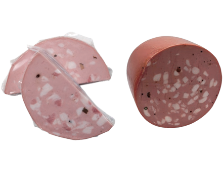
24Mortadella di tartufo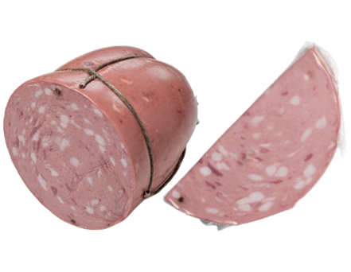
25Mortadella di cinghiale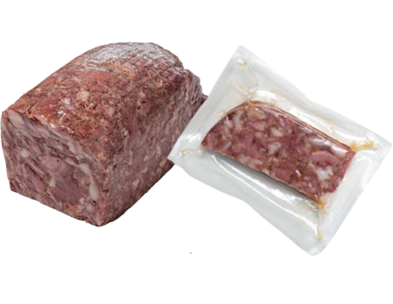
26Coppa di testa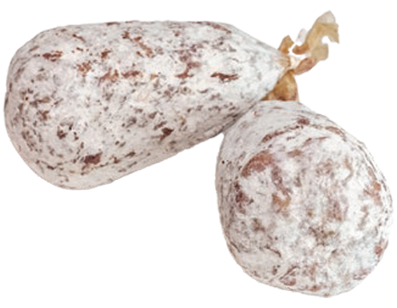
27Coglioni di mulo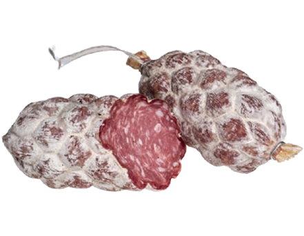
28Palle del nonno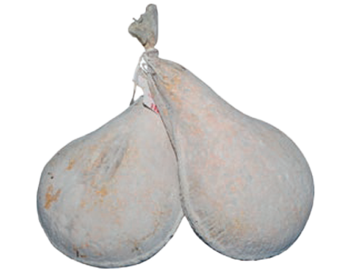
29Fiaschette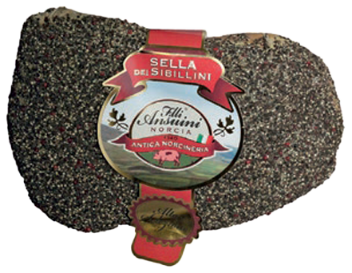
30Granfetta dei Sibillini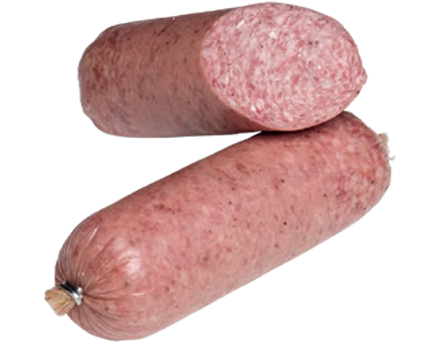
31Cremoso di Norcia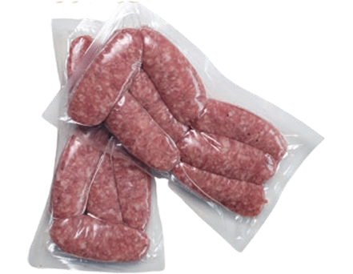
32La Gustosa di Norcia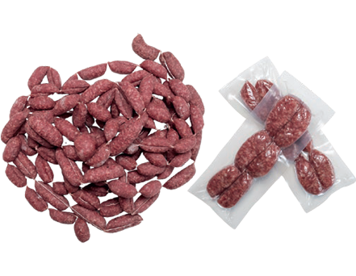
33Nursinelle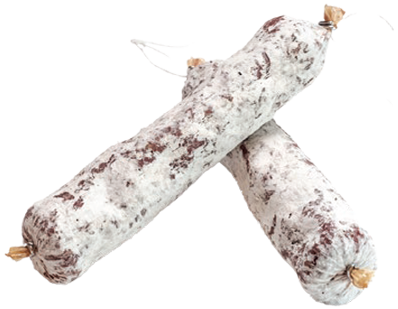
34Ansuinetto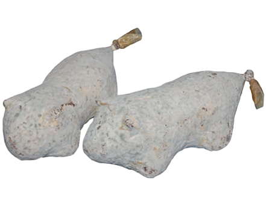
35Maialino
Prezzi e disponibilità in bottega, al telefono o sullo shop online. Nel catalogo completo ci sono anche Granfiocco, Granfetta, Nursinetto e Piccolo norcino.
Se passi per la Valnerina, fermati a Norcia
In Viale della Stazione Mastro Vittorio e la moglie Anna ti consigliano i salumi giusti, anche per un panino cotto sulla brace a legna. Prosciutto, lonza, capocollo e coppa, con un'ampia scelta di formaggi e carni fresche.
- Aperta 7 giorni su 7
- 7:00–19:30
- Parcheggio ampio per camper
- Carico dell'acqua gratuito
Dallo stabilimento al banco
Dagli anni 2000 la famiglia lavora e stagiona in un proprio stabilimento. Luigi Ansuini segue la produzione.
- Salami e lonze
- Lonzini e pancetta
- Guanciale
- Prosciutto
Prima di venire in bottega
Quando è aperta la bottega?
Dove vi trovo a Norcia?
Arrivo in camper: posso parcheggiare?
Posso comprare online?
Fate vendita all'ingrosso?
Antica Norcineria F.lli Ansuini
Chiama per un ordine o per sapere cosa c'è al banco oggi. Rispondiamo anche via email.
- Indirizzo
- Viale della Stazione 46
06046 Norcia (PG) - info@ansuininorcia.com
- Bottega
- Lunedì–domenica 7:00–19:30
- Ufficio
- Lun–ven 9:00–20:00 · sab 9:00–13:00
- Social
- Facebook · Instagram